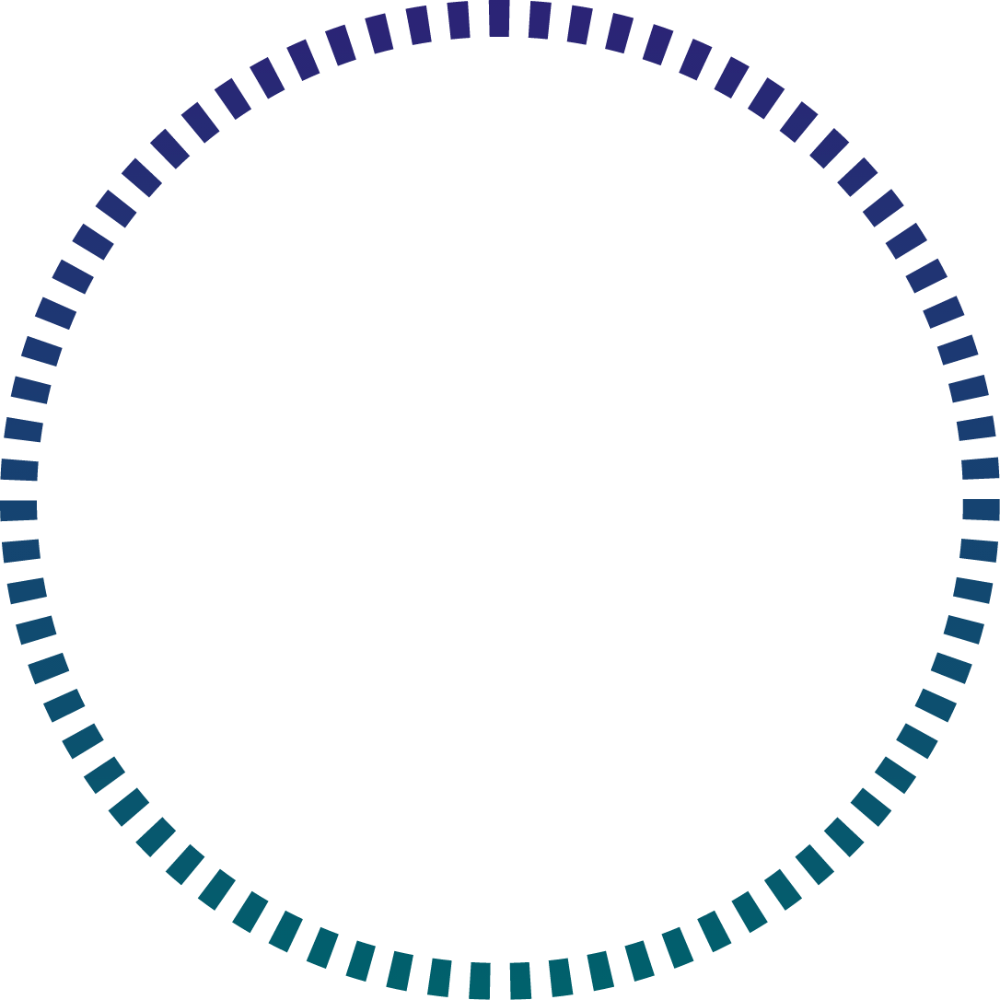
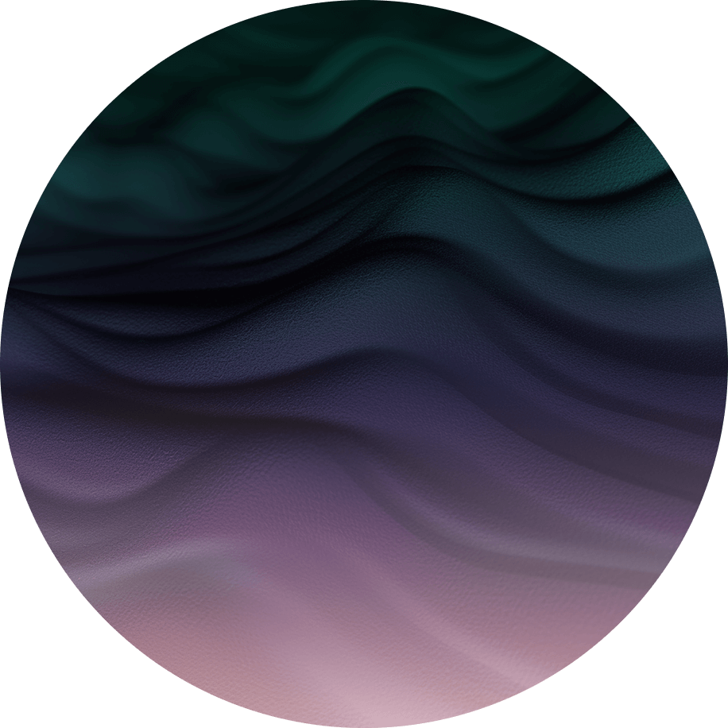

Team Lens proudly presents



From pets to cattle: Streamline your Kubernetes control plane management with k0smotron
Experience unparalleled isolation, scalability, and resource efficiency for your Kubernetes control planes with k0smotron - the ultimate Kubernetes management solution. It’s designed for k0s